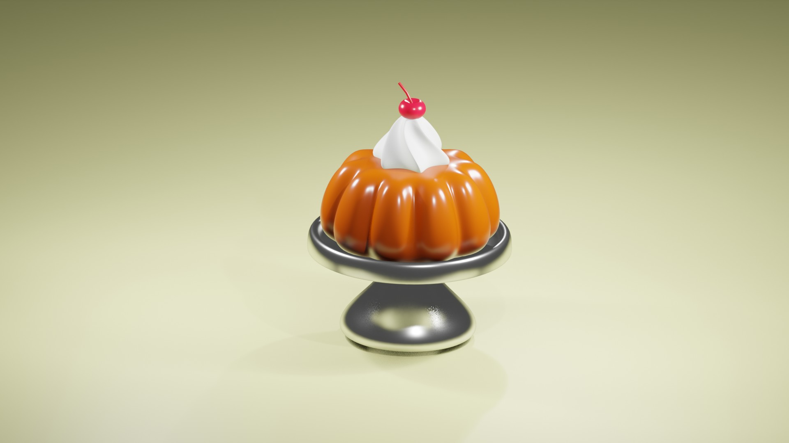
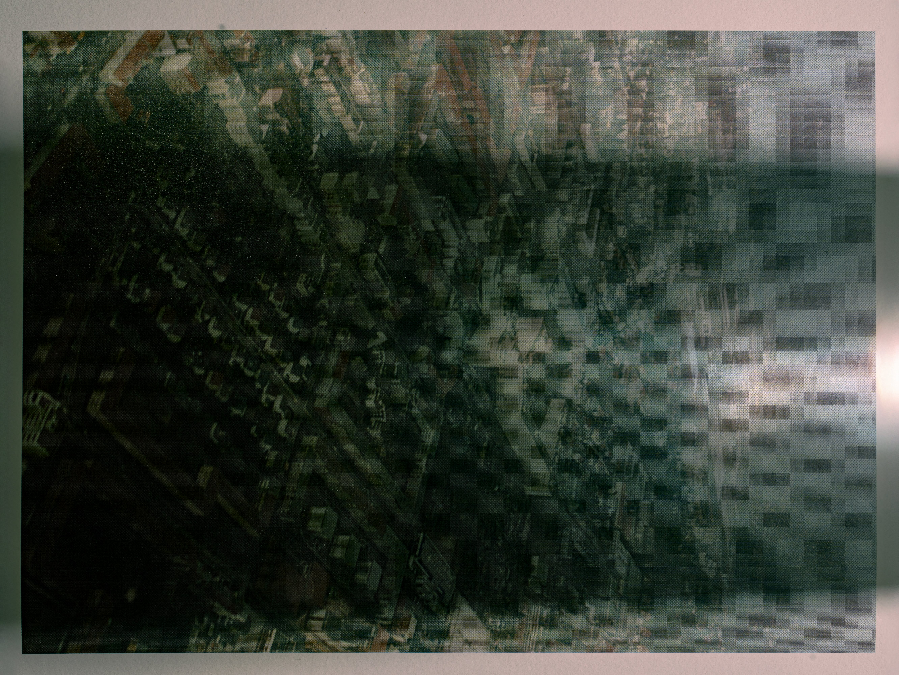
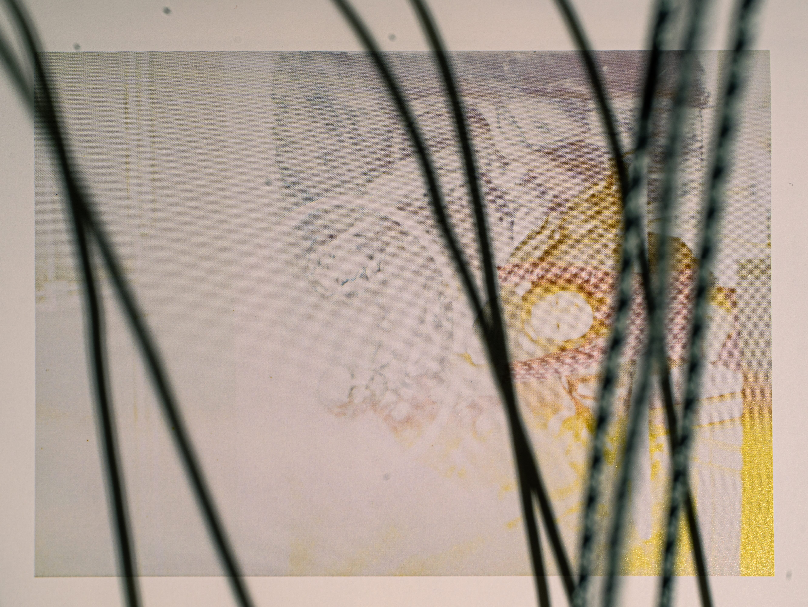
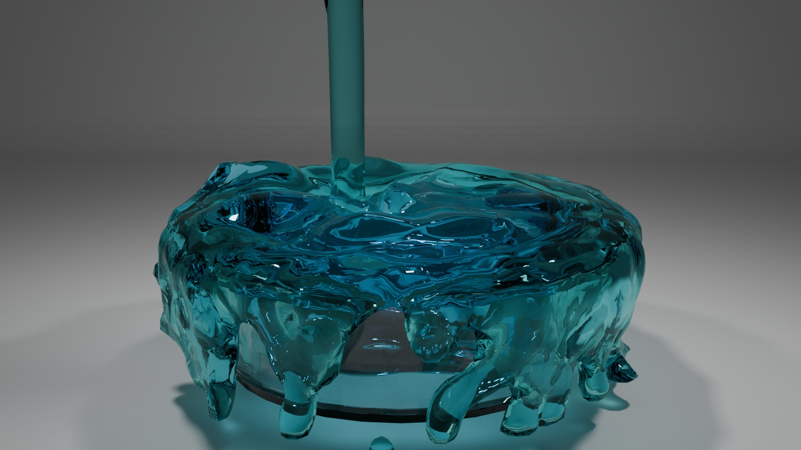
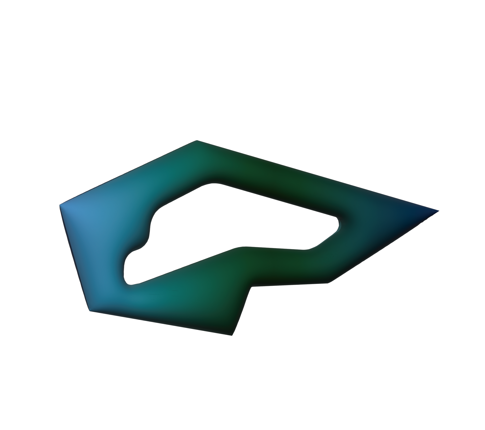

SCROLL: 0px
NEXT: 0 / 10000px
あと 10000px で次の投稿
visual_daily
スライムとかげ！！🦎
♡ 248 💬 12
design_world

新しいデザインを考え中。🧐
♡ 521 💬 38
3d_creator

上空からお届け✈️
♡ 183 💬 9
photo_memory

去年撮った写真📸
♡ 96 💬 4
food_daily

どろっどろのどろどろ。。
♡ 734 💬 51
daily_room
🟥⭐️🔵
♡ 324 💬 17
world_news
今日のニュース✉️
♡ 102 💬 26
recommend
これ、おすすめです💥
♡ 891 💬 74
daily_life
忙しない踏切⚪️ー🔴
♡ 411 💬 21
animal_world

へにゃぶよマーク
♡ 1,204 💬 89